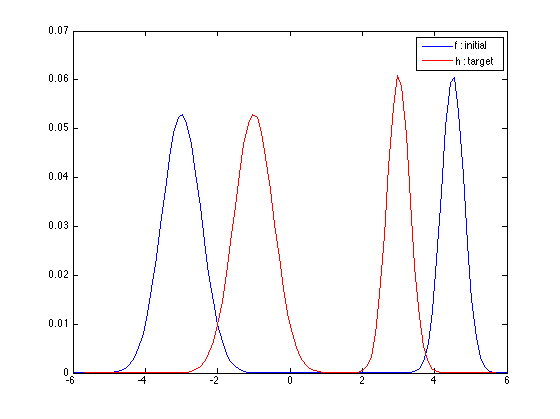
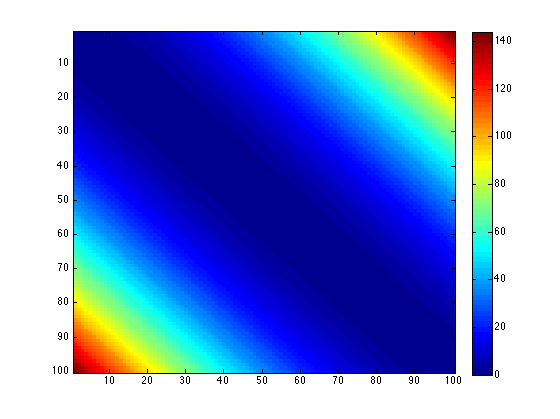
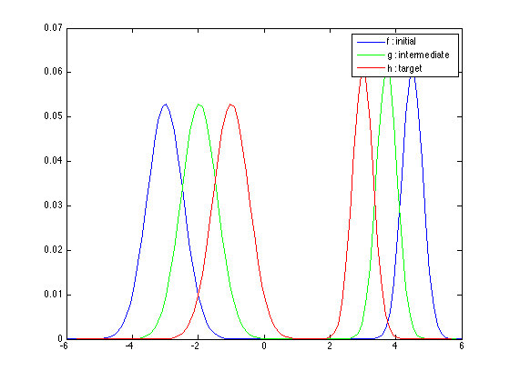

Interpolation Using Optimal Transport
The optimal transport problem is concerned with transporting a distribution of mass to a target distribution with 'minimum effort'. Suppose $f(\cdot)$ and $h(\cdot)$ denote the initial and target distributions respectively. We would like to find a 'transport plan' $T(\cdot,\cdot)$ that describes how mass is transferred from $f$ to $h$. Specifically, $T(x,y)$ denotes the density of mass transferred from $f$ at $x$ to point $y$. If $T$ is a valid transport plan, then its entries are non-negative and its marginals equal $f$ and $g$. That is, $$\int_x T(x,\cdot) dx = f(\cdot),$$ and $$\int_x T(\cdot,x) dx = h(\cdot).$$ We would like a transport plan $T(\cdot,\cdot)$ that can be realized with as small work as possible. One way to penalize transport plans that require moving a weight at $x$ to a far away $y$ is to use a cost function of the form $\langle C, T \rangle$, where $C$ is a penalty function defined such that the weight $C(x,y)$ increases monotonically with the distance $|x-y|$. Thus the problem can be formulated as follows $$ \min_T \langle C, T \rangle \quad \text{subject to} \begin{cases} \int_x T(x,\cdot) dx = f(\cdot), \\ \int_x T(\cdot,x) dx = h(\cdot), \\ T(x,y) \geq 0, \forall x,y. \end{cases}$$ Notice that this problem, when discretized, is a linear program. Let us demonstrate the discussion numerically.
We first construct the initial and the target distributions. Both distributions are Gaussian mixtures with two components. The only difference between $f$ and $h$ is the means of the two components.
L = 100; % number of points in the distributions n = linspace(-6,6,L); % grid for the distributions Gaussian = @(mean,variance,n) exp( -(n - mean).^2 / (2*variance) ) / sqrt(2 * pi * variance); w1 = 0.6; % weight for the first component w2 = 1-w1; % weight for the second component var1 = 0.3; % variance for the first component var2 = 0.1; % variance for the second component s1 = -3; % mean of the first component for f s2 = 4.5; % mean of the second component for f t1 = -1; % mean of the first component for h t2 = 3; % mean of the second component for h f = w1 * Gaussian(s1,var1,n) + w2 * Gaussian(s2,var2,n); f = f / sum(f); % normalize to unity h = w1 * Gaussian(t1,var1,n) + w2 * Gaussian(t2,var2,n); h = h / sum(h); % normalize to unity figure; plot(n,f); hold on; plot(n,h,'r'); legend('f : initial','h : target');
Let us now find the optimal transport plan. For this, we need a weight function $C$.
[X,Y] = meshgrid(n,n); C = abs(X - Y).^2; figure; imagesc(C); colorbar;
Notice that the values of $C$ increase as we move further from the diagonal. We next solve the linear program associated with the optimal $T$. Notice that we use the 'cvx' package. An alternative is to employ 'linprog', if you have Matlab's optimization toolbox.
cvx_begin quiet variable T(L,L) nonnegative minimize( sum(sum( C .* T ) ) ) subject to sum(T,2) == f(:); sum(T',2) == h(:); cvx_end
Now that we obtained $T$, let us consider interpolation. We would like to obtain a distribution $g$ that lies 'in the middle of' $f$ and $h$. By in the middle, we mean that the mass transport should end half the way from $f$ to $h$. To be more specific, let $u$ denote mass transported from a neighboorhood of $x$, namely $[x,x+\delta_1]$ to a neighborhood of $y$, namely $[y,y+\delta_2]$. Notice that $$u = \int_{x}^{x+\delta_1} \int_{y}^{y+\delta_2} T(v,z)\,dv\,dz \approx T(x,y)\,\delta_1\,\delta_2.$$ If this amount of mass is carried half way, then it will be transported to $[y',y'+\delta/2]$, where $y' = (x+y) / 2$. The new transport plan, say $\hat{T}$ should therefore satisfy $$u \approx \hat{T}(x,y')\,\delta_1\frac{\delta_2}{2}.$$ Or, we should have $$\hat{T}\left(x,\frac{x+y}{2}\right) = 2 T(x,y), \text{ for all } x,\, y.$$ Let us now construct this new transport plan. Notice that the new transport plan preserves the diagonal, i.e., $\hat{T}(x,x) = T(x,x)$.
T2 = diag(diag(T)); % preserve the diagonal for r = 1:L; for c = r+2:2:L, T2(r,r + (c-r)/2) = T(r,c-1) + T(r,c); end for c = r-2:-2:1, T2(r,r - (r-c)/2) = T(r,c+1) + T(r,c); end end
To obtain the intermediate distribution $g$, sum over the rows.
g = sum(T2);
Here are the three distributions. Notice that the modes of $g$ appear half way in between those of $f$ and $h$.
figure; plot(n,f); hold on; plot(n,g,'g'); plot(n,h,'r'); legend('f : initial','g : intermediate','h : target')
Acknowledgement : I thank Prof. Taylan Cemgil, Bogazici University, for discussions.
Ilker Bayram, Istanbul Teknik Universitesi, 2016